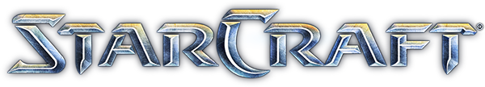
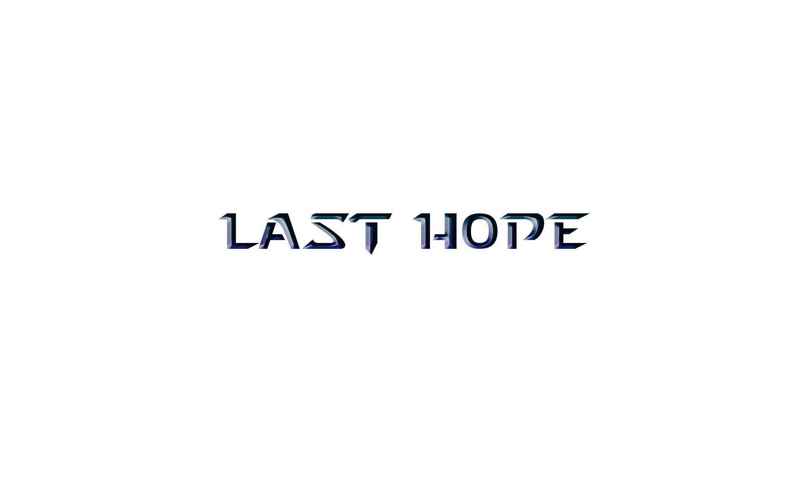

Welcome to the website of Starcraft Last Hope
We are a group of classmates from second course of Game Development and Design at Universitat Politecnica de Catalunya (UPC), Terrassa.
During this semester it was required to form an 8 man team to develop a game using starcraft (1997) graphical assets and sounds using SDL library, SDL_Mixer on the university in house 2d engine.
As a gamification feature we got to form our own (fake) indie company called Brainwashing studio. We got roles assigned,
and we had to follow real protocols from the industry such as preproduction document creation, alpha protocol, beta protocol, QA workflows etc..
Instead of just smashing the keyboard.
The conceptualization of a mini game mixing tower defense/last stand + capture the flag genres was born on various creative and discussion sessions,
inspired by a mod in starcraft 2 called left 2 dead.
Left 2 dead reference